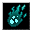

死の霊媒術 Death Channel
英語版 CrawlWiki の記事「Death Channel」(0.30 向け、2023-06-17 版)の翻訳です。原文の著者は編集履歴をご覧ください。
この記事は 0.30 の時点の内容で、最新の 0.34 とは違うところがあるかもしれません。
|  死の霊媒術 | |
|---|---|
| レベル | 6 |
| 系統1 | 死霊術 |
| 入手元 | 反生命の魔法書 邪悪な創造の魔法書 |
| 詠唱の騒音 | 6 |
| 呪文の騒音 | 0 |
| 威力の上限 | 200 |
| 嫌う神 | エリヴィロン 輝けるもの ジン |
| フラグ | 有益(Helpful)、自己強化(Selfench)、補助(Utility) |

| 殺された生き物、悪魔、神聖なモンスターの魂を縛りつけ、呪文の効果が続く間、その亡霊をこの世に留めて術者のために戦わせる。 |
死の霊媒術はレベル6の死霊術の呪文で、モンスターを幽体として甦らせる。
基本情報
一定時間 霊媒(DChan)の状態になる。その間、殺された生物、神聖、悪魔のモンスターは 100% の確率で幽体として甦る。幽体の能力は、そのモンスターの生前の姿をもとにする。
幽体はそれぞれおよそ 81 ターン存在する。ただし霊媒の効果時間が切れると、幽体はすべてその場で消えてしまう。死の霊媒術を唱え直して効果時間を延ばすことはできない。
呪文の威力を上げると呪文の効果時間は延びるが、個々の幽体が存在する時間は延びない。
この呪文は、ほかの「死体を消費する」死霊術の呪文のどれとも併用できるという、ほかにない性質を持っている。1体のモンスターに対して、霊媒ともう一つの死霊術の効果を同時に働かせられる。ゴザーグの黄金の手とも併用できる。ただし(幽体を作れる)イレデレンヌルとは併用できない。
戦略
ほかの死霊術と同じく、死の霊媒術は大勢の敵を相手にするときに真価を発揮する。一度唱えて何体か倒せば、衰弱攻撃をする幽体の軍勢ができあがる。ゾットの領域やエクステンデッドでも、大きな群れを壊滅させられる。
MP のコストを別にすれば、死霊の蘇生やほかのアンデッドを作る呪文と死の霊媒術を併用しない理由はない。
変更履歴
- 0.29 より前は、効果中に死の霊媒術を唱え直せた。幽体が存在する時間は変わらなかったが、霊媒の状態は延びた。
- 0.28 より前は、神聖なモンスターや悪魔、死体を残さないモンスターには効かなかった。
- 0.26 より前は、召喚の持続時間が 5 ではなく 6(およそ 170 ターン)で、呪文の効果が切れても幽体は消えなかった。
- 0.16 より前は、召喚された幽体があなたについて階段を移動した。
- 0.15 より前は、死の霊媒術の効果時間は今の半分だった。